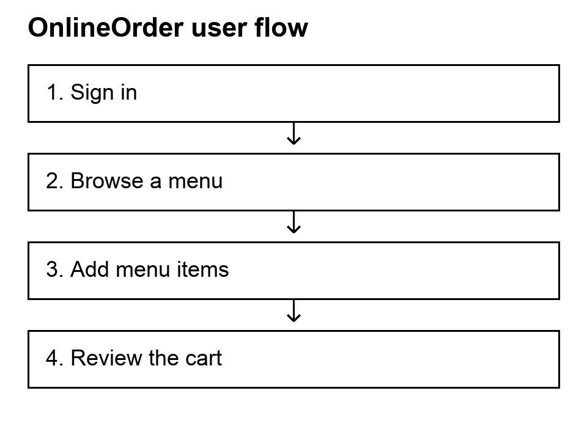

OnlineOrder
The user task
I built a food ordering workflow where a user can register, sign in, browse restaurants and menus, and add items to a cart. The React and Ant Design interface communicates with a Java Spring Boot service backed by PostgreSQL.
The ordering flow
- Register or sign in to establish an authenticated session.
- Browse restaurants and their menu items.
- Add menu items and review quantities and the total in the cart.
- Use the demo checkout, which clears the cart.

My implementation decisions
Keep cart updates together
I used Spring Data JDBC entities and repositories for persistence and transactional services for cart changes. Adding an item updates its quantity and the cart total together. Cart changes also invalidate the cached cart view.
Connect the interface to the authenticated user
The React client sends credentialed requests so the backend can use the user's session. The backend derives the customer from the authenticated principal. The client keeps live cart state and uses centralized API error handling.
Current scope
Checkout is a demonstration that removes cart items and resets the total. Payment processing, delivery fulfillment, and an order history are outside the current implementation.